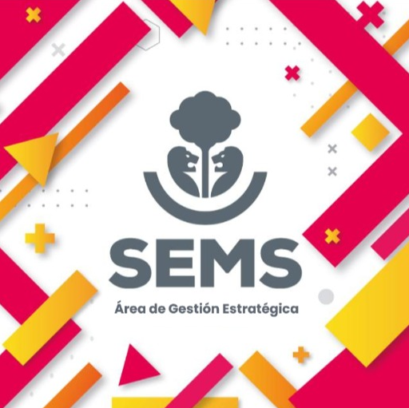

La Secretaría de Educación del Estado de Jalisco (SEJ), a través de la Subsecretaría de Educación Media Superior y el Área de Gestión Estratégica de Educación Media Superior (AGEEMS), con domicilio oficial en Av. Central Guillermo González Camarena #615, Col. Residencial Poniente, C.P. 45136, Zapopan, Jalisco, México, es responsable del tratamiento y protección de los datos personales que sean recabados y procesados mediante la aplicación web interna AGEEMS-APP (https://ivanrodriguez-cloud.github.io/AGEEMS-APP/).
El tratamiento de sus datos personales se realiza con estricto apego a lo dispuesto por los artículos 6° apartado A y 16 párrafo segundo de la Constitución Política de los Estados Unidos Mexicanos; los artículos 4° y 9° de la Constitución Política del Estado de Jalisco; la Ley General de Protección de Datos Personales en Posesión de Sujetos Obligados; la Ley de Protección de Datos Personales en Posesión de Sujetos Obligados del Estado de Jalisco y sus Municipios; la Ley de Transparencia y Acceso a la Información Pública del Estado de Jalisco y sus Municipios, y en consonancia con el Aviso de Privacidad Integral de la Secretaría de Educación Jalisco (AP_CGEDS_SEJ_agosto_25_Integralv2.pdf), disponible para consulta pública en https://apprende.jalisco.gob.mx/aviso-de-privacidad/.
AGEEMS-APP es una herramienta digital de operación y gestión administrativa interna. El acceso está restringido exclusivamente a servidores públicos y personal adscrito que cuenten con una cuenta institucional activa bajo el dominio @jalisco.gob.mx y que hayan sido previamente autorizados en el directorio de control de acceso (DIRECTORIO SEMS) administrado por el área responsable.
Para autenticar su identidad institucional, asignar perfiles de usuario y gestionar los trámites operativos de la plataforma, se recaban los siguientes datos personales:
@jalisco.gob.mx) y Clave Única de Registro de Población (CURP).sessionStorage) exclusivamente para mantener la continuidad de la sesión entre los módulos protegidos del sitio.Se informa que a través de esta plataforma no se recaban datos personales sensibles (tales como origen étnico, estado de salud, creencias religiosas, opiniones políticas o datos biométricos).
Los datos personales recabados serán utilizados única y exclusivamente para las siguientes finalidades primarias necesarias para la operación institucional:
@jalisco.gob.mx y verificar su autorización activa en la base de datos interna antes de permitir el ingreso a cualquier módulo de la aplicación.Se hace de su conocimiento que sus datos personales no serán vendidos, difundidos ni transferidos a terceros ajenos a la administración pública estatal, salvo aquellas transferencias que sean estrictamente necesarias para atender requerimientos de información de una autoridad competente debidamente fundados y motivados, o las excepciones previstas en el artículo 22 de la Ley de Transparencia y Acceso a la Información Pública del Estado de Jalisco y sus Municipios y el artículo 75 de la Ley de Protección de Datos Personales en Posesión de Sujetos Obligados del Estado de Jalisco y sus Municipios.
La interfaz pública del sitio se aloja como aplicación estática en GitHub Pages, mientras que el procesamiento lógico y el almacenamiento de las bases de datos operan sobre la infraestructura institucional de Google Workspace (Google Apps Script y Google Sheets) administrada mediante cuentas oficiales @jalisco.gob.mx. Asimismo, la aplicación no emplea cookies de rastreo comercial; el almacenamiento temporal (sessionStorage) se depura automáticamente al cerrar la sesión o la pestaña del navegador.
Usted podrá ejercer en cualquier momento sus derechos de Acceso, Rectificación, Cancelación y Oposición (ARCO) respecto al tratamiento de sus datos personales:
ivan.rodriguez@jalisco.gob.mx.El presente documento puede sufrir modificaciones o actualizaciones derivadas de nuevos requerimientos legales, disposiciones administrativas de la Secretaría de Educación Jalisco o mejoras técnicas en la plataforma. Cualquier cambio será publicado directamente en esta misma sección.